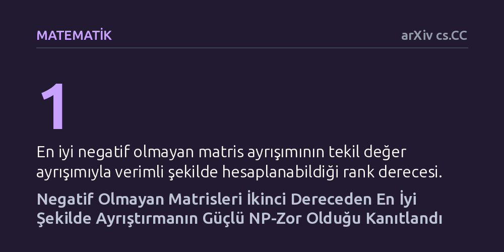

MATEMATIK · arXiv cs.CC · 2026-10-17
Çalışmada, negatif olmayan veri matrislerini en az hatayla iki bileşene ayıran matris ayrışımının (rank-2 NMF) hesaplama karmaşıklığı incelendi. Matematiksel analiz, bu en iyi yaklaşımı bulmanın teorik olarak çözülmesi en güç problemler arasında (güçlü NP-zor) yer aldığını kanıtladı.
Veri analizinde yaygın kullanılan bu yöntemin sadece iki bileşenli en yalın halinde dahi kusursuz ve hızlı bir genel çözümünün bulunamayacağını kesinleştirir.

Modern veri analizinde, görüntü işlemede ve makine öğrenmesinde veriler genellikle negatif olmayan sayılardan oluşan büyük tablolar, yani matrisler halinde saklanır. Bu karmaşık veri yapılarını sadeleştirmek ve içlerindeki gizli kalıpları ortaya çıkarmak için negatif olmayan matris ayrışımı (NMF) yöntemine sıkça başvurulur. Bu yaklaşımda amaç, büyük bir veri tablosunu sadece pozitif değerler içeren daha küçük iki tablonun çarpımı şeklinde yaklaşık olarak ifade etmektir. Negatif değerlere izin verilmemesi, elde edilen parçaların fiziksel olarak yorumlanabilmesini sağlar.
Ancak bu sadeleştirme işleminin hesaplama maliyeti uzun süredir temel bir araştırma konusudur. Matrisi yalnızca tek bir temel bileşene (1. derece) indirgemek standart matematiksel yöntemlerle hızlı ve kesin biçimde çözülebilirken, boyutu sadece bir adım artırıp iki bileşene (2. derece) çıkarmak istediğimizde ne olacağı merak ediliyordu. Araştırmanın temel sorusu, en yalın ikinci basamakta dahi veriyi en az hatayla iki bileşene ayırmanın hesaplama açısından verimli bir şekilde yapılıp yapılamayacağıdır.
Bu araştırma laboratuvar deneyleri, anketler veya bilgisayar simülasyonları içeren bir çalışma değildir; tamamen teorik bilgisayar bilimi ve diskret matematik temellerine dayanan tümdengelimsel bir ispattır. Araştırmacı, incelenen problemin zorluk derecesini belirlemek için karmaşıklık teorisinin en temel ispat araçlarından biri olan polinom zamanlı indirgeme yöntemini kullanmıştır.
İndirgeme işleminde, bilgisayar biliminde çözülmesi en zor problemlerden biri olarak kabul edilen Klik (Clique) çizge problemi başlangıç noktası olarak seçilmiştir. Yazar, bir ağdaki tüm düğümlerin birbiriyle doğrudan bağlantılı olduğu alt kümeleri bulmayı amaçlayan bu zor problemi, matematiksel adımlarla 2. derece matris ayrışımı problemine dönüştürmüştür. Bu dönüşüm sırasında, girdileri polinom derecesinde sınırlı tamsayılardan oluşan özel simetrik ve pozitif tanımlı matrisler kurgulanarak ispatın matematiksel geçerliliği sağlanmıştır.
Elde edilen ana bulgu, negatif olmayan bir matrisi Frobenius normuna göre en az hatayla iki bileşene ayırmanın 'güçlü NP-zor' (strongly NP-hard) olduğunu kesinleştirmiştir. 'Güçlü' ifadesi burada kritik bir anlama sahiptir: Problemdeki sayılar çok büyük sayılardan değil, küçük tamsayılardan ibaret olsa dahi, genel ve kusursuz bir çözümü makul (polinom) bir sürede verebilecek hiçbir algoritmanın var olamayacağını gösterir.
Bunun yanı sıra yazar, geliştirdiği indirgeme yönteminin simetrik matrisler için de doğrudan geçerli olduğunu kanıtlamıştır. Yani simetrik bir veri tablosunu iki bileşenli simetrik negatif olmayan çarpanlara ayırmak da aynı şekilde güçlü NP-zor sınıfındadır. Böylece problem 1. dereceden 2. dereceye çıktığı anda, hesaplama karmaşıklığı açısından çözülebilir alandan pratikte kesin çözümü imkânsız olan en zor problemler alanına sıçramaktadır.
Bu matematiksel sonuç, veri işleme ve algoritma tasarımı alanında çalışan araştırmacılar için net sınırlar çizmektedir. İki bileşenli gibi son derece mütevazı görünen bir basamakta dahi her veri kümesinde mükemmel sonucu hızlıca bulacak genel bir kesin algoritma aramak teorik olarak sonuçsuz kalmaya mahkûmdur.
Pratik dünyada bu bulgu, mühendislerin ve araştırmacıların kusursuz çözümler peşinde zaman kaybetmek yerine yaklaşık sonuçlar veren sezgisel yöntemlere ve gradyan tabanlı optimizasyonlara odaklanması gerektiğini doğrular. Günlük hayatta veri madenciliği ve yapay zekâ uygulamalarında kullandığımız yaklaşık algoritmaların neden mükemmellik garantisi veremediği ve neden sadece yerel en iyi noktalara ulaşabildiği, bu kanıt sayesinde sağlam bir teorik temele oturmaktadır.